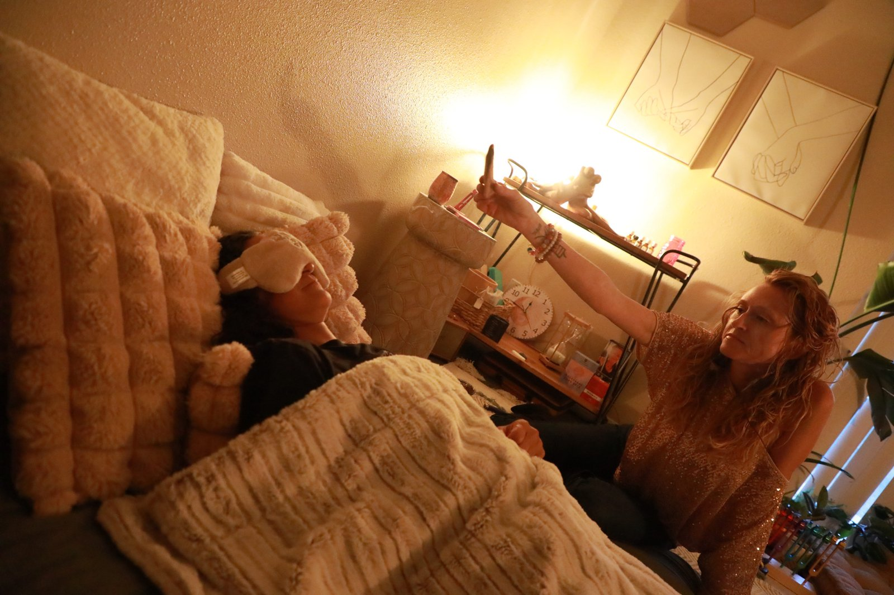

Chakra Healing · Mesa, AZ
For what talk therapy can't always reach.
Energy work that's grounded, accessible, and held by someone who's done the clinical work too.
Sometimes the body knows something the words haven't found yet.
You feel it as tension in the chest you can't trace. Fatigue that doesn't respond to sleep. Tightness in the throat when you try to speak up. Heaviness in the gut. Numbness in places that used to be alive. Talk therapy can do a lot — but it can't always reach the places where energy is stuck.
That's what chakra work is for.
What chakra healing actually is
The chakras are seven energy centers running along the spine, each one connected to a different aspect of physical, emotional, and spiritual experience. Stuck energy in one of these centers can show up as physical tension, emotional patterns, or a sense of being "stuck" you can't otherwise explain.
Chakra healing is the practice of bringing awareness, breath, sound, movement, and intention to each of these centers — gently noticing what's there, releasing what's ready to move, and inviting more flow. It's accessible whether you've done energy work before or not. You don't need to believe anything specific for it to work. You just need to show up curious.
Energy centers, simply explained.
You don't need to know any of this before coming in. But it helps to see the map.
Root Chakra
Base of spine
Safety, security, grounding. When blocked: anxiety, fear, feeling unrooted or unsafe in your body.
Sacral Chakra
Lower abdomen
Creativity, pleasure, emotional flow. When blocked: numbness, guilt around pleasure, feeling creatively stuck or emotionally flat.
Solar Plexus Chakra
Upper abdomen
Confidence, personal power, sense of self. When blocked: people-pleasing, chronic self-doubt, stomach tension you can't explain.
Heart Chakra
Center of chest
Love, connection, compassion. When blocked: walls up, difficulty trusting, grief that lingers, tightness in the chest.
Throat Chakra
Throat
Communication, self-expression, truth. When blocked: swallowing words, fear of speaking up, a literal tightness in the throat.
Third Eye Chakra
Between the brows
Intuition, clarity, inner knowing. When blocked: overthinking, disconnection from your gut instincts, foggy-headedness.
Crown Chakra
Top of the head
Spiritual connection, meaning, presence. When blocked: feeling disconnected from purpose, spiritual emptiness, going through the motions.
Full System
All seven together
Sometimes what's needed isn't one center but a full-body reset. We work with your whole energy system as one connected landscape.
Most of us have energy moving freely through some of these centers and stuck in others. That's normal. The goal isn't perfection. It's awareness, and then gentle movement toward more flow.

A grounded space for subtle work
Energy work doesn't have to be abstract or mystical. In this space, it's practical, embodied, and held by someone who understands both the clinical and the energetic layers. You bring the curiosity. The rest unfolds from there.
What a session looks like.
60-75 minutes
In-person at our Mesa office or virtual. We start with a body check-in, then guided breath, movement, sound, and intentional practice.
How it feels
Most people leave feeling lighter, more grounded, and more connected to themselves. Some have insights. Some just feel quiet for the first time in a long time.
Pairs with therapy
Chakra healing is wellness work, not therapy. Many clients pair it with individual therapy for the deepest layers of healing.
What to bring
Comfortable clothes. An open mind. That's it. Some clients like to bring a journal for after the session, but it's not required. You don't need any prior experience with energy work, meditation, or movement. You don't need to have read any books or watched any videos. You don't even need to know what a chakra is before you walk in. I'll meet you wherever you are, and we'll go from there.
Who chakra healing is for.
People feeling energetically stuck, blocked, or numb
People who carry physical tension without a clear medical cause
People who've done a lot of talk therapy and feel like there's something it isn't reaching
People in transition (life, identity, season) who want to move energy through
People looking for a complement to their existing therapy or coaching
A note: Chakra healing is wellness work, not therapy. It doesn't diagnose or treat mental health conditions. If you're working through clinically significant concerns, therapy is the right primary container — chakra work can be a meaningful complement.
FAQ
What are chakras?
Seven energy centers running along the spine, each connected to a different aspect of physical, emotional, and spiritual experience. They are a model — a useful map for working with the subtle layer of how we hold experience in the body.
Do I need to believe in chakras for this to work?
No. People who come in skeptical and curious often have powerful experiences. You don't have to believe anything. You just have to show up.
How many sessions do I need?
That depends on what you're working with. Some people come for a single session to clear something specific. Others come for a series. We talk about pacing as we go.
Can I combine this with therapy?
Yes — many clients do. Some pair chakra work with therapy I'm providing; others pair it with another therapist's work. Either is fine.
I came in feeling stuck everywhere — my throat, my chest, my gut. I didn't know how to describe it to a therapist. Alicia didn't need me to explain it. She just worked with what was there. I left feeling lighter than I have in years.
Other ways we can work together.
Individual Therapy
The clinical side. Pair chakra work with trauma-informed therapy for the deepest layers of healing.
Learn moreTantra Coaching
Sacred sexuality, embodiment, and the deeper kind of intimacy. A natural complement to energy work.
Learn moreWorkshops & Groups
Community healing experiences. Breathwork, movement, and the power of doing this work alongside others.
Learn moreExplore energy work.
Reach out for a free consultation. We'll talk about what you're noticing and whether chakra work feels right.